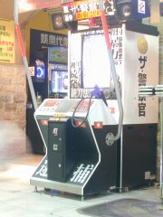

騎車時在路上看到一隻狗，坐著，脖子上掛了兩個花圈，看著遠方，一動也不動。
真玄妙!!我應該把牠拍下來才對。雖然隨身有帶相機，不過懶得靠邊停好車特地去拍。
在我等紅燈時的數十秒，牠就這樣一動也不動，真夠乖的。不知道牠在想甚麼。 
去桃園玩電動，晚上才回來。天啊!!有臺新電玩!!KONAMI出的，用身體去閃躲、 找掩蔽。有夠好玩!!本來只是去玩打鼓還有DDR的，結果花在這台 『Е•警察官 新宿24時』 上面的錢最多，且為了蹲下還有潛行，大腿酸得要死!!比玩DDR 還慘。@_@
花了一堆錢，最好的記錄也才一道打到第四關說，最高的官階有玩到CHIEF BUREAU過。 這遊戲因為有躲在掩蔽後很安全的特性，所以採用了和NAMCO 出的TIME CRISIS 系遊戲一樣的計時制。不過生命方面是採用警官制，一開始有三名警官， 射到其它警官或人質是降一級，而被射到就是....死了，換下一個菜鳥上場，重新爬吧。 升級有何好處呢？某些級會加時間，某些級會加警官數。
最高一級會加100 個警官說!!我看是升到署長了吧....@_@
不過這種制度為何膽敢如此地『送隻』呢？因為打到路人或被打到會拖個5 秒， 很要命的。就算是有100個屬下可以去送死，時間也不容許....到0 秒， 照樣GAME OVER....@_@
像我最高升到的那級就是送四個警官，加上原來的共有 7名。 我最後就是因時間到而GAME OVER的。
這遊戲和一般的槍射擊遊戲一樣，多練多背應該可過。 大多數的敵人是對著你開槍，所以可以在右邊低下去，潛行到左邊再出來殺敵。 在一些火力不猛的畫面連潛行都不用， 只要漸漸邊走位邊開槍就可以像小馬哥一樣地殺光敵人了。:D
很帥吧∼不過我有點懷疑是不是路人看到我在玩其實覺得這個人很蠢說....:P